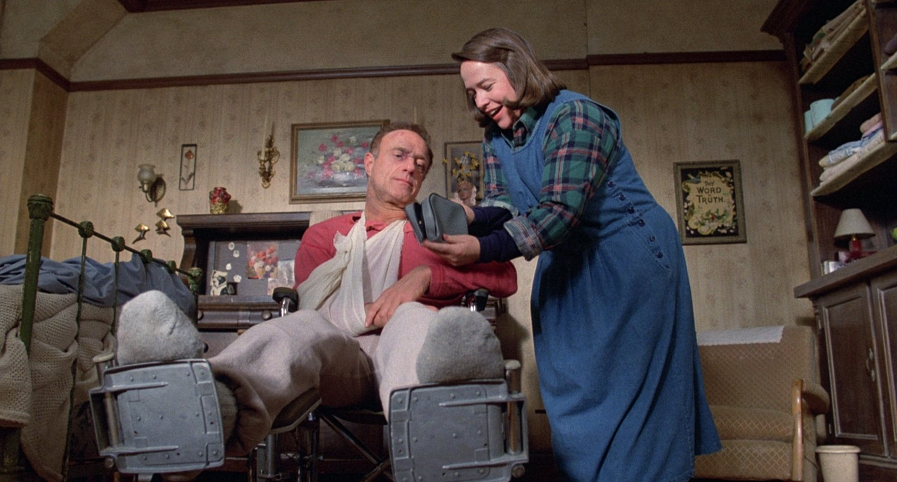
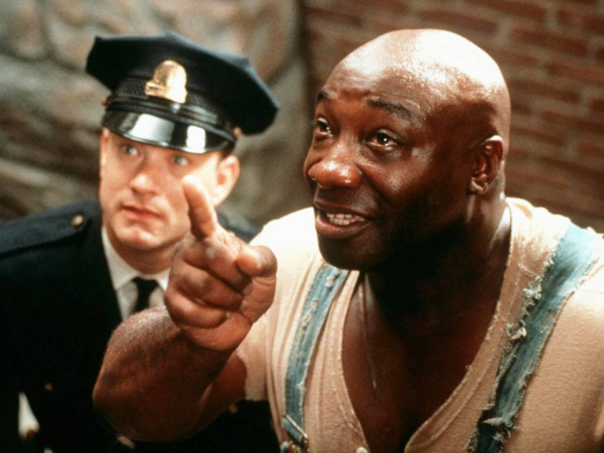
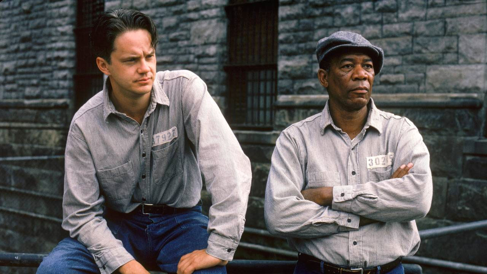
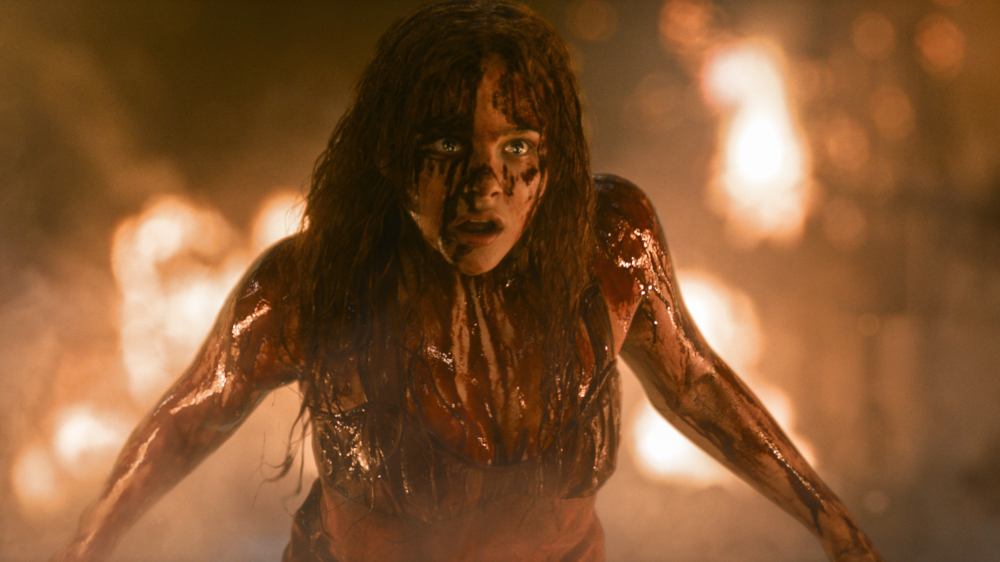
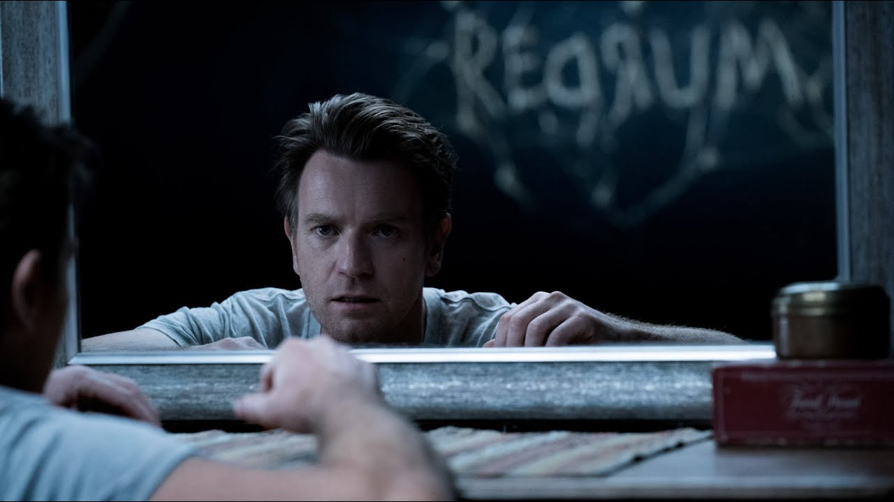

#1 The Shining (1980) - "Wendy, sono a casa amore!"

Primo film della rassegna Stephen King e il cinema.
È strano come il più grande horror di tutti i tempi, uno dei cult più amati di sempre, tratto dal romanzo del 1977, sia in realtà il film che King detesta di più. Il motivo, secondo lo scrittore, è quello secondo cui Stanley Kubrick non avrebbe compreso pienamente il senso più recondito del suo libro, stravolgendo completamente la trama. “Il film è freddo e distaccato”, disse.
Eppure, The Shinig, uscito nel 1980 e interpretato da Jack Nicholson e Shelley Duvall, è un capolavoro assoluto che, davvero, ha poco a che vedere con il romanzo dal quale è tratto; ma forse non è un male.
Kubrick sfoltisce molto le parti fantastiche che popolano l’opera di King, cambia il finale e realizza un horror le cui chiavi di lettura sono davvero infinite.
Molti ci hanno visto una possibile parabola del genocidio degli indiani d’America, altri il genocidio degli ebrei da parte del regime nazista e fascista. Altri ancora, hanno immaginato la follia di Jack Torrance come la geniale idea dello scrittore che all’inizio fa il colloquio per il lavoro da custode.
#2 Misery (1990) - “Sono la tua ammiratrice numero uno"

Film del 1990 diretto da Rob Reiner e ispirato al libro del 1987.
Lo scrittore Paul Sheldon, interpretato da James Caan, di rientro a casa dopo aver terminato il suo ultimo romanzo, viene colto da un’improvvisa tempesta di neve e finisce con la macchina in un fosso. Perde i sensi ma un misterioso individuo lo vede e lo trae in salvo.
È la giunonica Annie Wilkes, ovvero la meravigliosa Kathy Bates, che con la scusa di essere la sua ammiratrice numero uno, lo prende in ostaggio torturandolo.
#3 The Green Mile (1999)

“Mi devo aspettare dei problemi, ragazzone?”, dice ad un certo punto il carceriere Paul Edgecombe (Tom Hanks) all’enorme prigioniero di colore John Coffey, condannato ingiustamente alla sedia elettrica per aver stuprato e ucciso due bambine.
In realtà non è lui il colpevole e Paul lo scoprirà attraverso i poteri del carcerato, il quale gli mostrerà la verità.
La stessa luccicanza che possedeva il piccolo Danny in Shining ora la possiede anche il nerboruto Coffey de Il miglio verde. C’è un passaggio del testimone da un bambino ad un uomo di colore detenuto nel braccio della morte negli Stati Uniti degli anni ’30.
Non il momento migliore per un afroamericano, e King si diverte a rintracciare elementi fantastici e un briciolo di speranza all’interno di un penitenziario, ricostruito poi da Frank Darabont nel 1999 con il film omonimo.
#4 The Shawshank Redemption (1994) – “Qui dentro sono tutti innocenti!”

Secondo dramma carcerario uscito nelle sale cinematografiche nel 1994 e diretto sempre da Frank Darabont che prende ispirazione direttamente dal racconto di Rita Hayworth e la redenzione di Shawshank.
Il film narra la storia di Andy Dufresne, un bancario che, accusato di aver ucciso la moglie e l’amante, è portato nel carcere di Shawshank per scontare una lunga pena e lì conosce Red Redding con il quale instaura una profonda e sincera amicizia.
Film acclamato sia dalla critica che dal pubblico, The Shawshank Redemption, uscito in Italia col titolo Le ali della libertà, è stato inserito nella lista dei cinquecento migliori film della storia, dove occupa il quarto posto.
#5 Stand By Me (1986)
“Ragazzi, vi va di vedere un cadavere?”.
Stand By Me parla di un gruppo di amici adolescenti che, con la scusa di vedere il corpo di un ragazzo loro coetaneo, vogliono in realtà trovare loro stessi e cercare il destino che spetta ad ognuno.
#6 Dolores Claiborne (1995) – “Qualche volta fare la carogna è la sola cosa che resta ad una donna!”
Anne Wilkes è la personificazione della follia omicida, Dolores Claiborne è invece la rappresentazione di una donna forte che è costretta ad agire in malo modo ma solo per amore di sua figlia.
L’ultima eclissi, titolo italiano del film del 1995, diretto da Taylor Hackford e interpretato, a parte dalla grande Bates, da Jennifer Jason Leigh, Christopher Plummer e da John C. Reilly.
Dolores Claiborne è una tragedia familiare, prima, e giudiziaria poi, che si consuma nell’arco di trent’anni.
Dolores lavora come cameriera per la ricca Vera Donovan, e quando torna a casa deve badare anche alla sua famiglia composta dal marito Joe e dalla figlia Selena. Un giorno, però, Dolores fa una terribile scoperta e per questo decide di indagare.
#7 It (2017) – “È ora di galleggiare”
It è un romanzo di formazione che si snoda in due grossi blocchi; il primo, che vede i giovani protagonisti entrare in contatto con il malefico Pennywise, e il secondo blocco in cui i protagonisti sono cresciuti e devono ancora una volta combattere il pagliaccio assassino.
Attraverso quest’opera, King realizza ancora una volta una storia di puro orrore, ma affronta anche temi più cari all’autore come l’adolescenza, la memoria, l’amicizia, la grettezza della piccola città e la paura di crescere.
It è tornato alla ribalta grazie ai due film di Andrés Muschietti, It del 2017 e It – Chapter Two del 2019.
Per ricoprire il ruolo che in passato fu di Curry, è stato scelto il giovane Bill Skarsgård, il quale è stato capace di dare vita ad un Pennywise diverso dal suo predecessore e davvero terrificante.
#8 The Dead Zone (1983)
The dead zone, interpretato da Christopher Walken, Martin Sheen ed Herbert Lom, parla del giovane insegnante Johnny Smith che dopo un incidente con la macchina finisce in coma.
Al suo risveglio Johnny si ritrova senza più lavoro e senza più la sua amata Sarah, nel frattempo sposatasi con un altro uomo. In compenso però, Johnny esce dal coma con dei poteri sovrannaturali.
Toccando le persone riesce a vedere il passato o il futuro. Questo dono permette a Johnny di diventare famoso nella comunità in cui vive, ma anche di conoscere prima di tutti il destino che lo attende dietro l’angolo.
#9 Carrie (1976) – “Sei scandalosa Carrie. Ti si vedono quelle due odiose escrescenze”

Film di culto diretto da Brian De Palma, Carrie rappresenta la prima trasposizione cinematografica di un racconto di Stephen King.
Con il suo inconfondibile stile, De Palma dirige una storia a metà strada fra un racconto adolescenziale e un racconto horror, incentrato sulla presenza del diavolo e i suoi poteri.
Carrie è una ragazza timida e totalmente succube della madre che la educa mediante la fede e la violenza. Tuttavia, Carrie, che vorrebbe essere più simile ai suoi compagni di classe, decide di andare al ballo con l’affascinante Tommy Ross, scatenando la furia della severa madre.
#10 Doctor Sleep (2019)

Doctor Sleep, sequel del romanzo e del cult di Stanley Kubrick.
Il regista Mike Flanagan, infatti, nonostante segua più fedelmente i passaggi del romanzo di King, non può fare a meno di ricreare l’atmosfera pesante del capolavoro del 1980.
Doctor Sleep è la storia di Danny Torrance (Ewan McGregor) che, dopo l’esperienza nell’Overlook Hotel e dopo la morte della madre, si da all’alcol per dimenticare.
Si riprende grazie ad un gruppo di alcolisti anonimi e inizia a lavorare in una casa di riposo; qui, grazie ai suoi poteri, aiuta gli anziani e i malati ad affrontare la morte in maniera serena.
Tuttavia, Danny fa la conoscenza di Abra Stone, una ragazzina anche lei in possesso dei suoi stessi poteri. Insieme cercheranno di fronteggiare la banda del Vero Nodo, capeggiata dalla spietata Rose The Hat.
Il film di Flanagan, nonostante non raggiunga i livelli di Shining, ci permette di rivivere ancora una volta le avventure di Danny Torrance. La prima parte è davvero avvincente; nella seconda il sequel si perde nella disperata ricerca di seguire il suo predecessore.